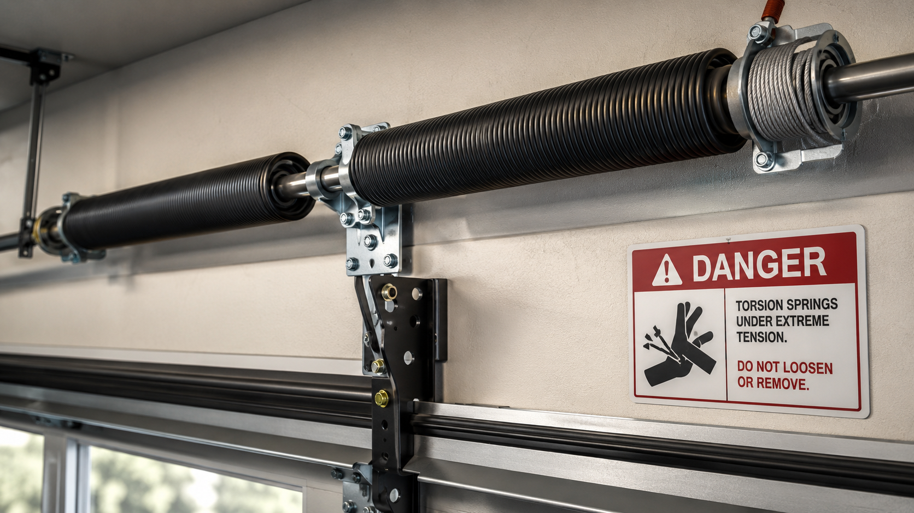
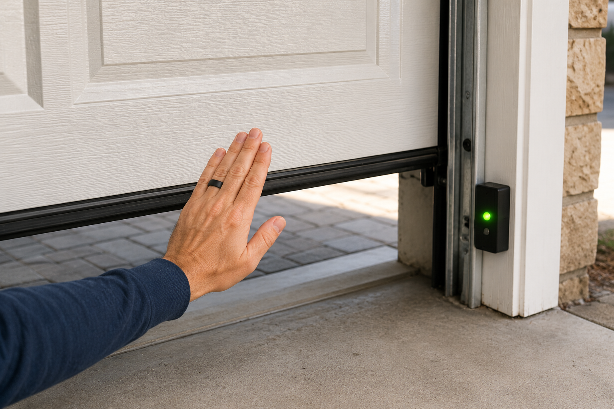
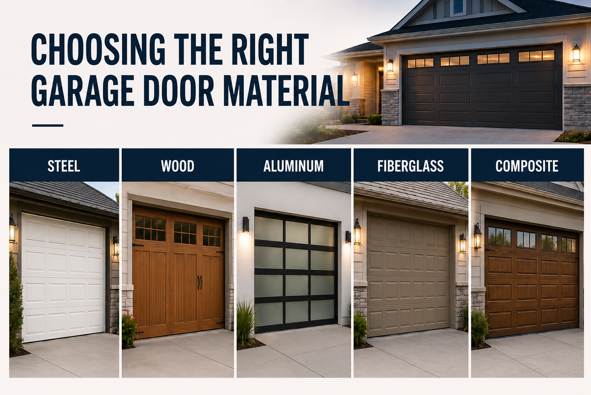
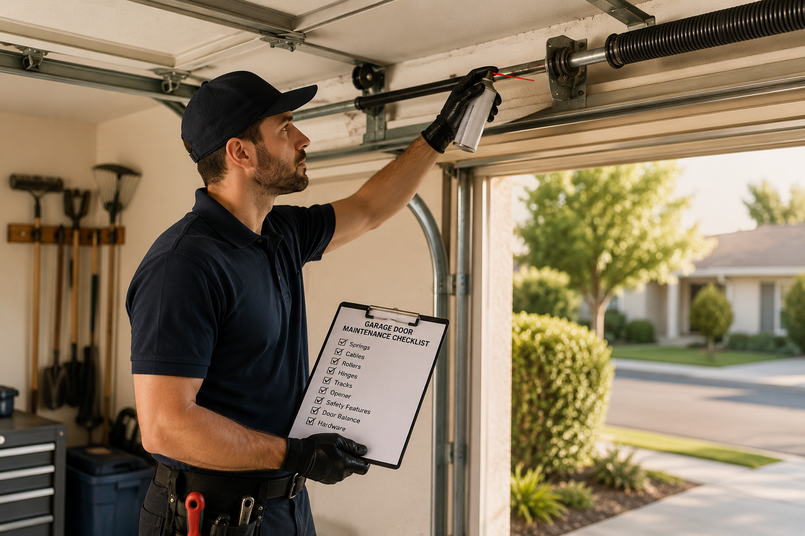
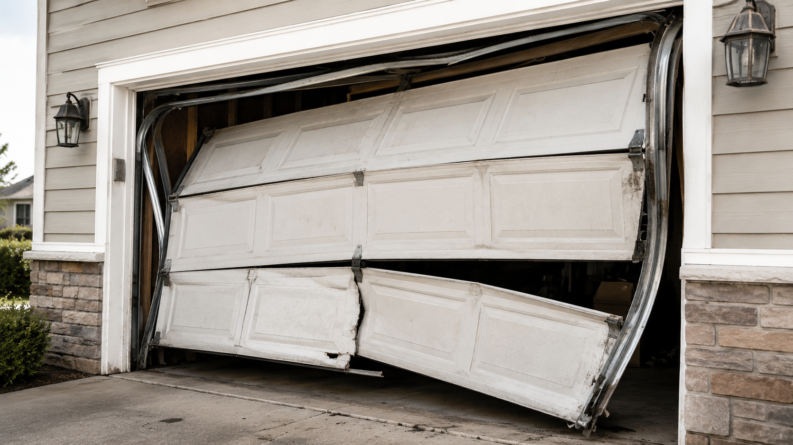

Troubleshooting
Why Is My Garage Door So Loud?
Grinding, squeaking, rattling — identify the noise and fix the problem.
Knowledge Hub
Expert advice to keep your garage door safe, quiet, and reliable.
Troubleshooting
Grinding, squeaking, rattling — identify the noise and fix the problem.

Safety
Why garage door springs demand professional handling — not DIY.

Troubleshooting
Systematic troubleshooting when your door refuses to open.

Troubleshooting
Sensors, tracks, springs — here's what to check first.

Diagnostics
The unmistakable signs your torsion spring has failed.

Buying Guide
Steel, wood, aluminum, fiberglass — pros, cons, and lifespan.
Pricing
Real 2026 price ranges by material and style.
Gates
Pros, cons, and total cost of ownership for both.

Maintenance
Monthly, seasonal, and yearly checks every owner should run.

Safety
Signs it's time to replace rather than patch.
Policy
What Castle covers — parts, labor, and standards.